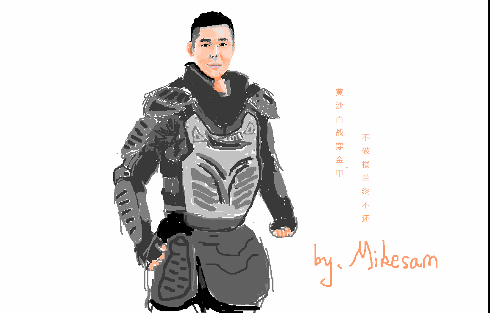
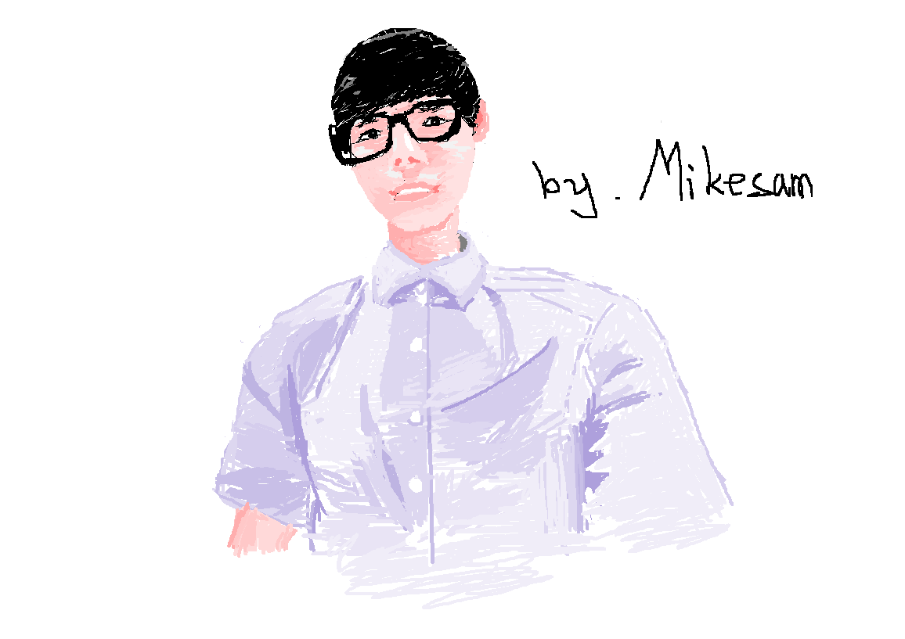
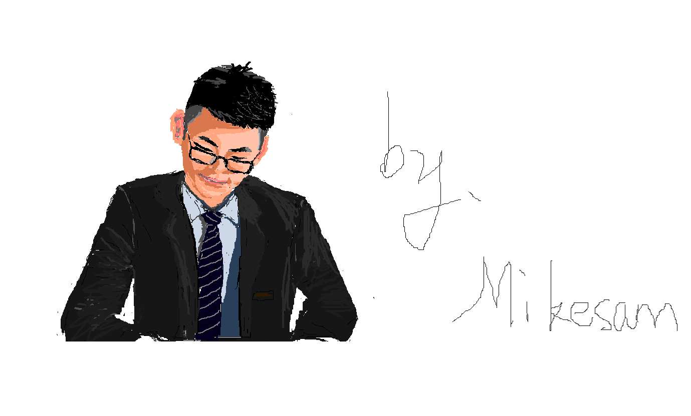
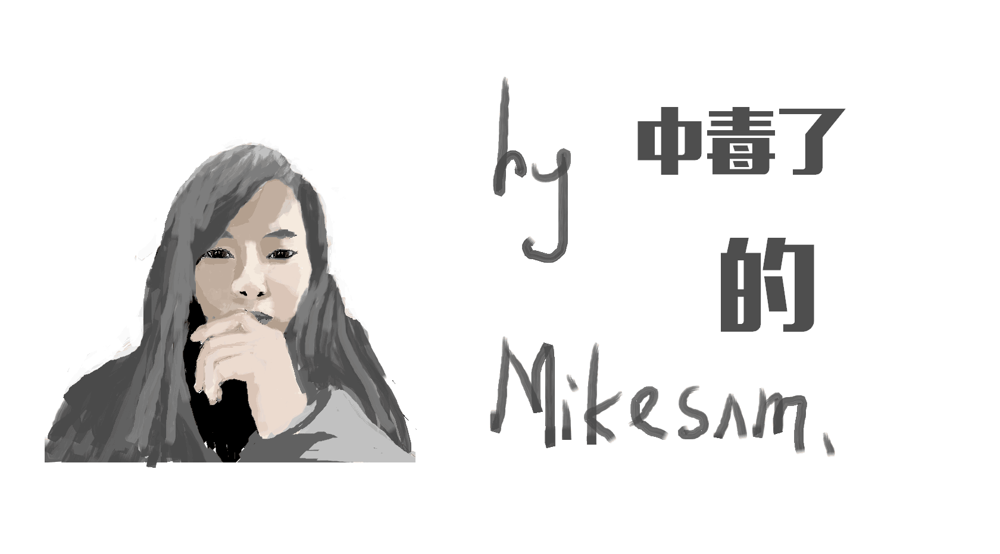
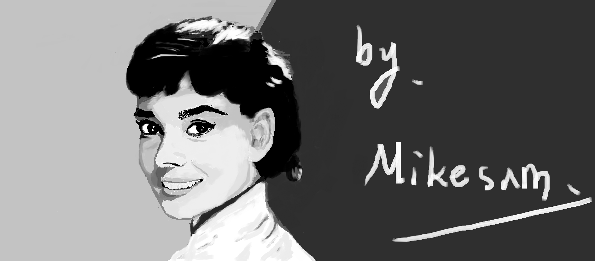
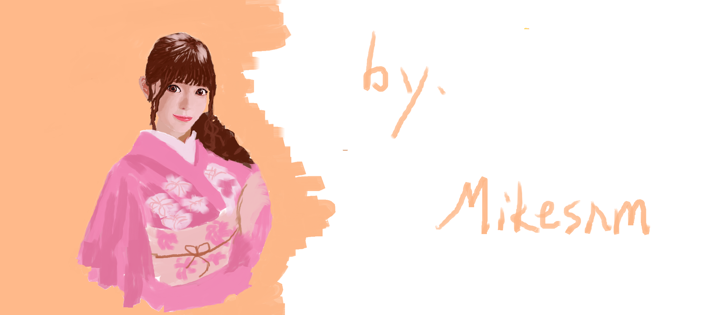
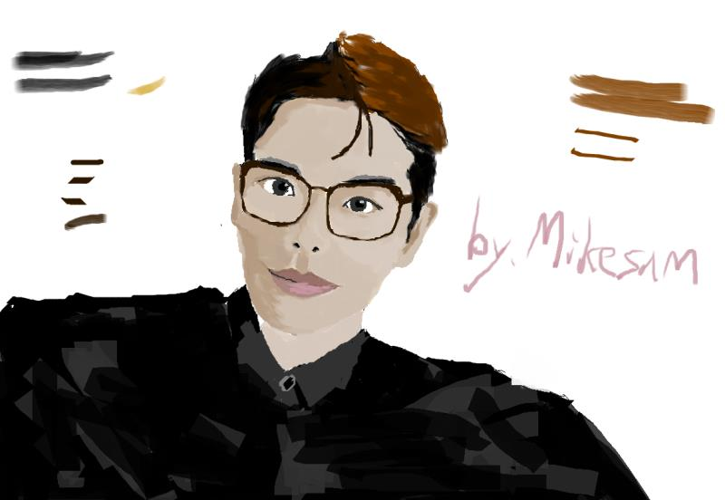

- Mikesam
- 50+人的研发中心技术副总
- 从0-1接近上百个项目立项到落地。
- Minecraft Plugins Developer
- Full Stack Developer
- 前后端通吃，软件、硬件都能打。
- Large Language Model Prompt Engineer
-
Graduated from
中国地质大学（北京）
China University Of Geosciences
2012.09 - 2016.06
- 朋友们的看法：
- - "贫民窟里的钢铁侠"
- - "一个喜欢造轮子的老家伙"
Which thing is fun?
-
Atlas PaaS
一个轻量级的Docker PaaS服务。 可以对Docker Image进行自动化编排， 对中大型 Minecraft 社区服务器（尤其是小游戏）非常友好， 在IMC.RE上稳定运行1年 -
Clash Of Island Series
An open-source RTS GAME for Minecraft: Java Edition. 基于 Minecraft 的开源 RTS 小游戏。在MC当中玩红警。 -
Interactive Simulacra of Human Behavior In Minecraft
基于 ChatGLM2-6B 和 ChatGPT 在 Minecraft 里面创造一个类似美剧《西部世界》的虚拟世界。 在一片虚构的大陆上由若干个国家组成的虚拟世界，使用 ChatGPT 驱动每一个 NPC。 NPC拥有自己独立的性格，喜好，喜怒哀乐，衣食住行等基本的属性等。 他们会在这个世界上像人类一样活着。
-
MiniGamesHub
当时 Minecraft 在国内还没完全火起来，我们当时在国内自己开了一家 Minecraft 服务器 MC云联盟 mcylm.com，在线日均1000左右，和一些小型网游差不多，于是就想继续拓展一下中国的这部分市场，借鉴了国外的一些优秀的服务器，准备把国外的优秀服务器的小游戏想法带入到中国，于是就开发了这样一个开源的 Minecraft 服务器插件。 插件的功能是将 Minecraft 实现链接部分小游戏的功能，将各种小游戏的数据集中进行处理、保存。 -
聚乐云
聚乐云是一个综合性的我的世界社区,主要面向我的世界的开发者,以及想要学习开发我的世界插件、模组的玩家群体,社区内有成熟的服务器解决方案,帮助开发者快速成长。 目前项目已上线，并且依然在维护当中。 https://www.clayun.com 这个项目不仅仅只是做我的世界这款游戏的服务器 paas 服务，底层采用 docker 做容器隔离，项目整体采用 spring cloud 做了分布式、高可用，因此可以为多款开源游戏提供服务器一键式开服服务。
Methodology
-
从我这一路的成长的来看，做成一些事情的人，往往都有一套最基本的方法论，来处理各种复杂的问题。
太阳底下就没有新鲜事。中华民族上下五千年，人类历史 600万年，如此长的历史，所有的东西，所有的思想，所有的行为，想象的到的，想象不到的，早就已经发生过无数次了。
凡是人做的事，就没有难的。 时刻告诉自己，任何时候自己的学习能力都不能消失。 -
我的方法论
工作也好，学习也罢，所有的人类做的事情，本质上就是“临摹”。在不断的重复别人做过的事情，无论是艺术创作，还是游戏创作 ，无论是设计，还是编程，都是如此。近些年所谓的创新也不过是站在上世纪60~70年代的前人的肩膀上，做了一些优化罢了。 在理论物理上的突破很可能在人类没有突破碳基大脑瓶颈之前，都不会有质的飞跃了。
在此前提下，所有的人、事都是有迹可循的，都是可以找到案例参考的。 见过足够多的人，做过足够多的事，在很多情况下，就能够靠经验做出正确的决策。
在这个过程当中，需要不断的试错，尝试，在行动中不断地优化、找到局部最优解，形成自己的知识体系。
就像右边的画，我从不认为我对绘画有什么天赋。我没有学过绘画，但是右侧的画是平均每幅我只需要4~6小时。
其中关键点就在于不断的试错，找到局部最优解。
这种方法对任何事情都有效，效率不一定的是最高的，但很多时候，慢就是快， 在不断试错的过程当中，收获到的经验是会从量变产生质变的。
- My painting
- 
- 
- 
- 
- 
- 
- 